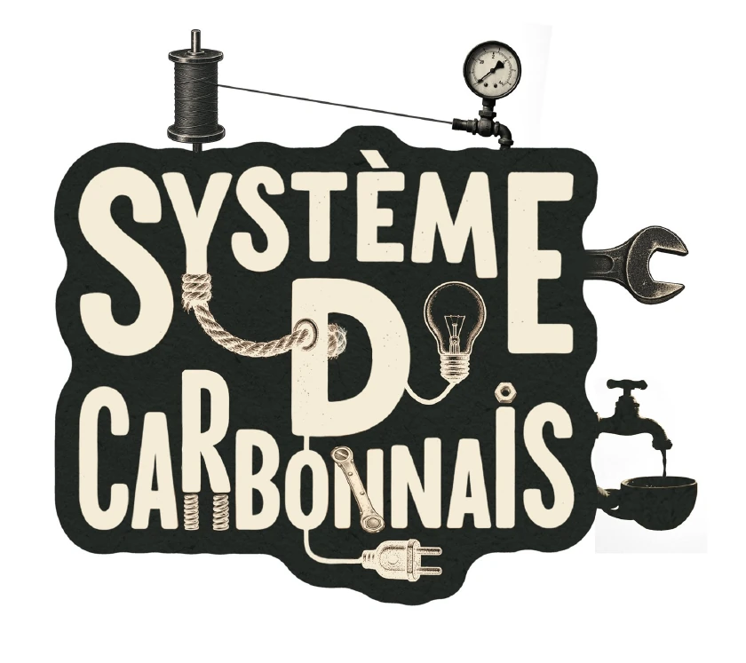

Système D Carbonnais
L’association prépare à Carbonne un atelier où habitants et bénévoles pourront apprendre ensemble à réparer un vélo, un vêtement ou un appareil du quotidien.

Le projet et ses documents
Budget d’équipement prévisionnelLire les 68 lignes d’équipement par phase ou télécharger le classeur Excel.Site de l’associationRetrouver Système D Carbonnais sur son site officiel.Statuts de l’association · PDFLes 24 articles adoptés le 16 septembre 2026. Copie de consultation sans le feuillet de signatures.Logo de l’association · PDFOuvrir ou télécharger le logo transmis par l’association.